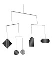

Home Page
F.A.Qs
Statistical Charts
Past Contests
Scheduled Contests
Award Contest
| Online Judge | Problem Set | Authors | Online Contests | User | ||||||
|---|---|---|---|---|---|---|---|---|---|---|
| Web Board Home Page F.A.Qs Statistical Charts | Current Contest Past Contests Scheduled Contests Award Contest | |||||||||
|
Language: Mobiles
Description Alabama Mobiles Inc. designs and manufactures mobiles, lightweight ``kinetic sculptures" consisting of a bar hanging from a string tied about its center. From each end of the bar hangs a string supporting either a small decorative object of some kind or another, smaller mobile. A well-designed mobile must have the weights of all the decorative items balanced, so that each bar in the mobile will naturally tend to hang horizontally. In addition, the lengths of the bars must be chosen so that each bar can rotate freely without striking the other bars, decorative objects, or the strings connecting them.
Write a program to read a partial design for a new mobile and determine if it can be balanced and if, once balanced, the elements will swing freely without bumping or entangling with one another. Each mobile will be described as a collection of bars and decorative objects. You will be given the lengths of the bars, the weights of all but one object, and all information on how the bars and objects are connected to one another. You may assume that the bars are made of a lightweight material so that their weight and the weight of the connecting strings are negligible compared to the weights of the decorative objects. You should assume that all connecting strings are of the same length. Every mobile will have at least one bar. Input The input consists of a number of mobile design specifications. Each mobile design is given as a series of numbered elements, beginning with number 1 and increasing sequentially until the end of the specification.
Each element is described on one line, beginning with the the element number. The next nonblank character will be either `B' or `D' to indicate that the element is a bar or a decorative object, respectively. If the element is a bar, the `B' indicator is followed by a floating-point number denoting the length of the bar, and then two integers giving the element numbers of the two elements hanging from the two ends of the bar. Every element in the input except the top bar will listed as hanging from one end of some bar. If the element is a decorative object, the `D' is followed either by a single floating point number denoting the weight of that object or by the character `X' indicating that the weight of that object has not been determined. There will be exactly one `X' object in each mobile specification. In each line describing an element, the numbers and characters making up that line are separated by one or more blank spaces. The end of a specification is indicated by a line containing a non-positive value in the place of the element number. If that number is negative, it indicates the end of the final mobile specification in the input file. Output For each mobile specification, the program should print one or two lines of output. The first will either be
Object M must have weight NN or The mobile cannot be balanced. where M is replaced by the element number of the `X' object and NN by the weight for that element that will balance the entire mobile (printed with two digits after the decimal point.) The second alternative should be printed if and only if no positive weight exists that will balance the mobile. If the mobile can be balanced, the second line of output will either be The mobile will swing freely. or The mobile will not swing freely. depending upon whether, when the strings are hanging straight down, all bars are separated by a positive distance no matter how they swing around on the string. Sample Input 1 B 4.0 2 5 2 D 6.0 3 D X 4 D 3.0 5 B 3.0 3 4 -1 Sample Output Object 3 must have weight 3.00 The mobile will swing freely. Source |
[Submit] [Go Back] [Status] [Discuss]
All Rights Reserved 2003-2013 Ying Fuchen,Xu Pengcheng,Xie Di
Any problem, Please Contact Administrator